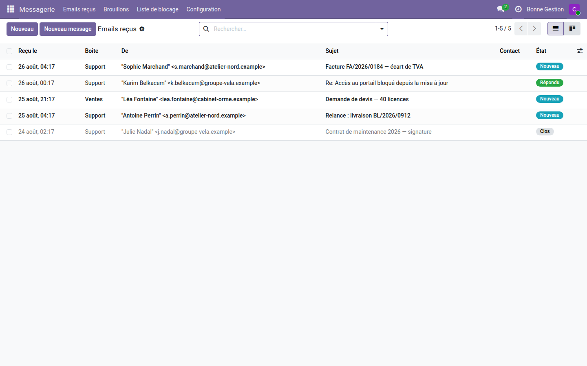
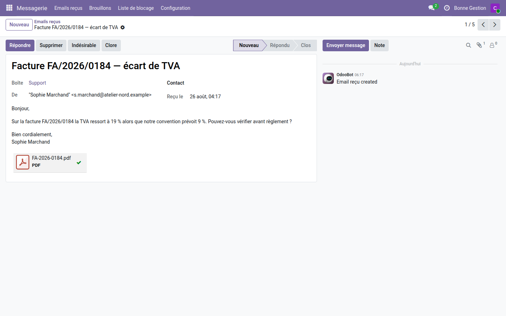
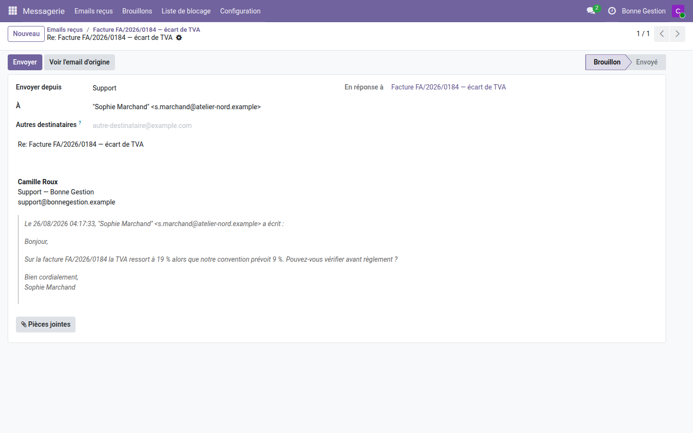
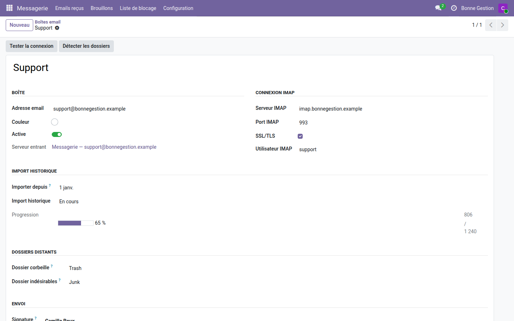
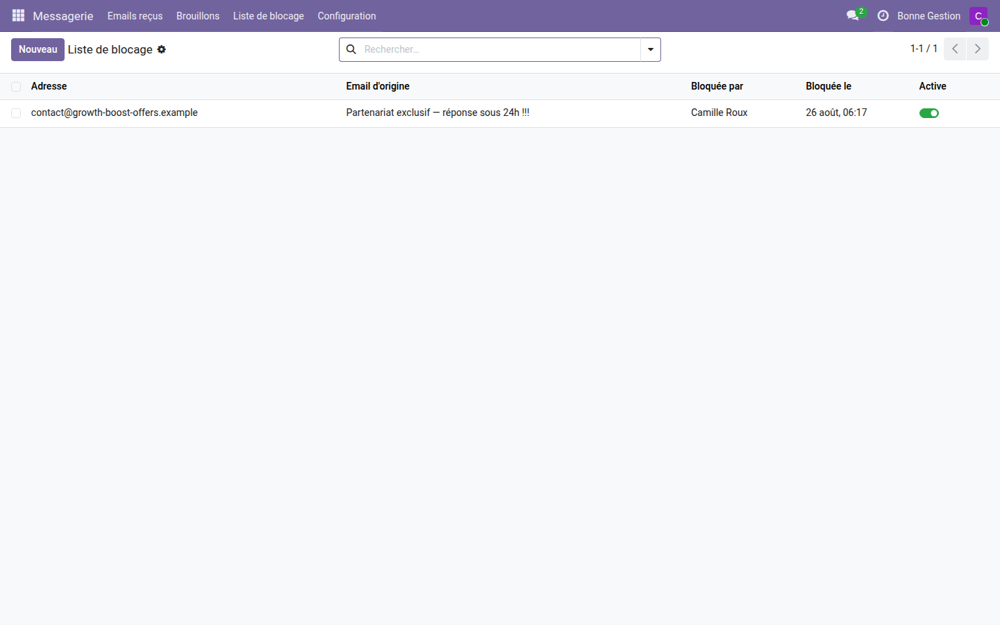

Messagerie — Boîte email unifiée
Toutes les adresses de la société relevées dans Odoo : lire, répondre, classer et supprimer sans ouvrir de webmail.
Une réclamation client arrive sur support@, une demande de devis sur ventes@, une relance sur compta@. Ces messages vivent dans un webmail que personne n'ouvre à deux, sans lien avec les commandes ni les factures qu'ils concernent. Le jour où l'on cherche « qui a répondu, et quoi », la réponse est dans la boîte de quelqu'un d'autre — ou nulle part.
Ce que ça apporte
- 📥 Autant de boîtes que d'adresses — chaque adresse de la société est relevée en IMAP et alimente une file d'emails commune, avec son état : Nouveau, Répondu, Clos, Indésirable.
- ✉️ Répondre depuis la bonne adresse — la réponse part de la boîte qui a reçu le message, avec sa signature ; la réponse du client revient dans la même file, dans le même fil.
- 📝 Brouillons qui survivent — un message commencé se retrouve dans « Brouillons » le lendemain, pièces jointes comprises, là où un composeur classique l'aurait perdu à la fermeture.
- 🗑️ Supprimer et classer jusque sur le serveur — l'email part dans la corbeille ou les indésirables du serveur IMAP, pas seulement dans Odoo. Rien n'est détruit : la fiche est archivée, le message déplacé.
- 🚫 Liste de blocage avec mémoire — une adresse marquée indésirable une fois ne remonte plus le lendemain ; le blocage porte sur l'adresse exacte, jamais sur son domaine, et reste réversible.
- 🔁 Aucun geste perdu — si le serveur IMAP ne répond pas, l'opération est mise en file et rejouée par une tâche planifiée ; la fiche affiche « synchronisation en attente » en attendant.
- 📊 Import de l'historique — les messages déjà sur le serveur sont rapatriés depuis une date choisie, avec une jauge qui avance sous les yeux, sans toucher aux drapeaux « lu » du serveur.
- 🔒 Deux niveaux d'accès — l'Utilisateur lit, répond et bloque ; le Manager configure les boîtes, débloque une adresse et rejoue la file.
En images
1. Une seule file pour toutes les adresses
Les emails des différentes boîtes arrivent au même endroit, avec l'expéditeur, la boîte destinataire et l'état de traitement.

2. L'email, ses pièces jointes et les gestes qui vont avec
Répondre, Supprimer, Indésirable, Clore : quatre boutons, et un fil de discussion Odoo pour garder la trace de ce qui a été fait.

3. Un brouillon qui sait de quelle boîte il part
L'expéditeur se choisit dans la liste des boîtes configurées. La signature de cette boîte est insérée à la composition — changer d'expéditeur remplace la signature, ne l'empile pas — et le message d'origine reste cité en dessous.

4. La configuration d'une boîte, et l'import qui avance
Serveur IMAP, dossiers distants de corbeille et d'indésirables, signature, serveur d'envoi. L'import de l'historique affiche sa progression et se rafraîchit tout seul tant qu'il tourne.

5. Ce qui a été bloqué, et par qui
Chaque blocage garde l'adresse, l'email qui l'a déclenché, l'auteur et la date. Une adresse bloquée par erreur se réactive d'un clic, côté Manager.

Pourquoi l'adopter
- Les messages clients cessent de vivre hors de l'ERP : ils sont lisibles par l'équipe, rattachés à un contact, et suivis par un état.
- Un geste fait dans Odoo se retrouve dans le webmail — l'email supprimé est vraiment dans la corbeille du serveur, pas seulement caché d'un côté.
- Aucun contact parasite : répondre à une adresse ne crée pas de fiche partenaire au passage, la base clients reste propre.
- Installation autonome : le module ne dépend que de
mail, livré avec Odoo Community. Rien à acheter à côté.
Ce que le module ne fait pas
Il n'est pas un client mail à trois volets : pas de glisser-déposer entre dossiers, pas de recopie des envois dans le dossier « Envoyés » du serveur, pas de blocage par domaine entier. Les messages envoyés restent tracés dans Odoo, sur la fiche de l'email d'origine.
Licence OPL-1 — Odoo 19.0 Community et Enterprise. Support : support@odooskills.com — apps.odooskills.com.